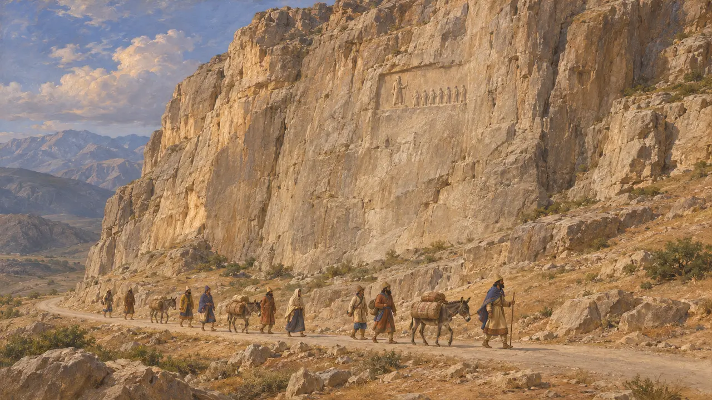
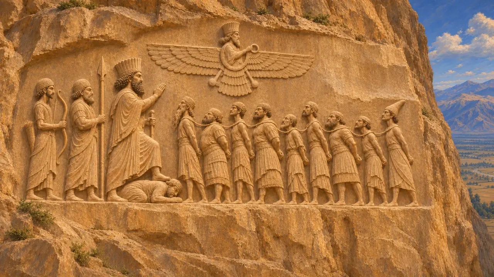
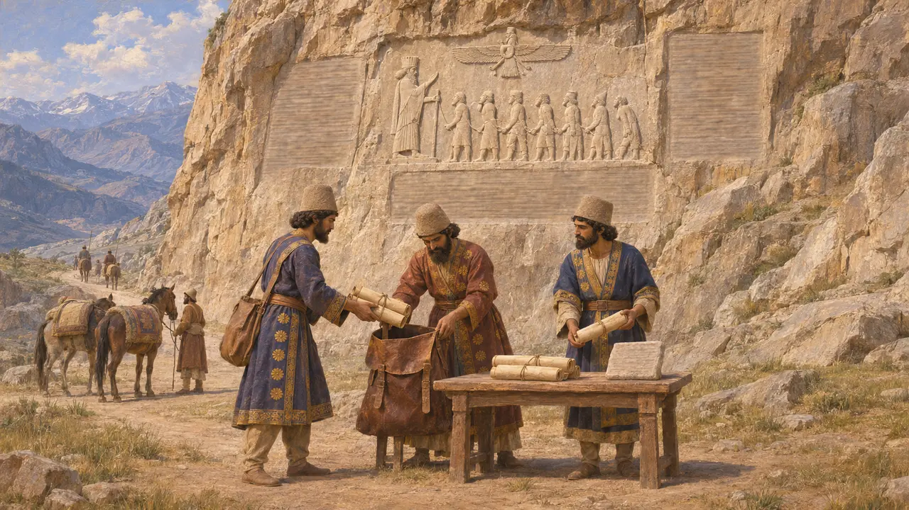
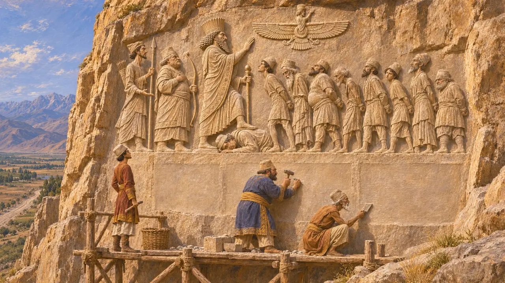
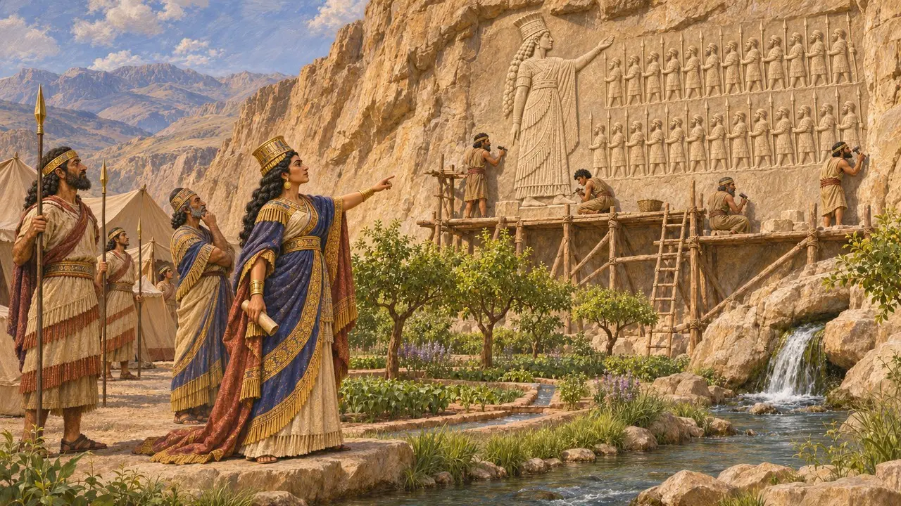

Bagastana (Behistun)
Rupe sacra sulla strada da Babilonia a Ecbatana, scolpita da Dario, 520-518 a.C. circa
Nel gioco: Livello 3: La Menzogna
Bagastana, l'odierna Bisotun nell'Iran occidentale, è una parete di calcare che sovrasta una sorgente sulla via principale dalla Mesopotamia a Ecbatana. Lì Dario fece scolpire la sua vittoria su Gaumata e sui re ribelli in un rilievo accompagnato da una lunga iscrizione in tre lingue. È il resoconto persiano più completo di come salì al trono e in epoca moderna divenne la chiave per decifrare il cuneiforme.
Nel gioco: Il livello 3 presenta Bagastana come il luogo in cui il rilievo del Re viene scolpito nella parete rocciosa. Il livello è ambientato nel 522-521 a.C., ma l'incisione iniziò probabilmente solo dopo le vittorie, intorno al 520 a.C., e fu ampliata negli anni successivi.

Un luogo degli dèi sulla Strada Reale
Racconto anticoIl nome deriva probabilmente da un antico persiano ricostruito baga-stana, «luogo degli dèi». Diodoro, che attinge a Ctesia, chiama la montagna Bagistano e afferma che era sacra a Zeus, il nome greco di un grande dio del cielo. La parete rocciosa sorgeva sulla trafficata via tra Babilonia e la capitale meda Ecbatana, così i viaggiatori su quella strada potevano vedere il monumento, almeno dal basso.
Diodorus 2.13

Il rilievo di Dario e dei re legati
Nelle fontiIl rilievo, a circa 60 metri sopra la pianura, mostra Dario con il piede su Gaumata abbattuto, seguito da due dignitari con arco e lancia. Davanti a lui stanno otto re ribelli prigionieri, legati per il collo, mentre una figura alata si libra in alto. Un nono prigioniero in piedi, Skunkha il Saka, fu aggiunto dopo la campagna contro i Saka del 519 a.C. circa. Per scolpirne la figura fu distrutta parte del primo testo elamita, che venne inciso di nuovo lì vicino.
DB; R. Schmitt, The Bisitun Inscriptions of Darius the Great: Old Persian Text, 1991

Tre lingue e copie in tutto l'impero
Nelle fontiL'iscrizione è conservata in elamico, babilonese e antico persiano. Racconta come Dario uccise Gaumata e, secondo il suo stesso computo, sconfisse in un solo anno nove re mentitori, tra cui Gaumata. Al §70 afferma di aver inviato il testo nelle province: a Babilonia sono stati rinvenuti frammenti di una copia babilonese su pietra, mentre da Elefantina proviene una versione aramaica su papiro. Henry Rawlinson copiò il testo della parete rocciosa tra il 1835 e il 1847, contribuendo alla decifrazione del cuneiforme.
DB §70; J. Greenfield and B. Porten, The Bisitun Inscription of Darius the Great: Aramaic Version, 1982

Dispute sulla scrittura e sul racconto
ContesoIn DB §70 Dario afferma di aver creato una nuova forma di scrittura. Molti ne deducono che il cuneiforme antico persiano sia stato ideato per questo monumento, poiché il suo testo fu aggiunto dopo le versioni elamita e babilonese, ma altri non concordano. Dario ed Erodoto definiscono entrambi l'uomo da lui ucciso un magio che si spacciava per Bardiya, figlio di Ciro, che Erodoto chiama Smerdi. Alcuni storici ritengono che fosse il vero Bardiya, il che farebbe dell'iscrizione la difesa di un trono usurpato.
DB §70; Herodotus 3.61; P. Briant, From Cyrus to Alexander, 2002

Semiramide presso la montagna
Leggenda posterioreDiodoro, seguendo Ctesia, racconta che la regina assira Semiramide si accampò ai piedi del monte, fece allestire un parco presso la sorgente e fece scolpire sulla parete rocciosa la propria immagine insieme a cento delle sue guardie. Il racconto appartiene alle storie greche su una semileggendaria regina d'Oriente e non è storia attendibile. Suggerisce però che intorno al 400 a.C., quando scriveva Ctesia, gli autori greci o i loro informatori non collegassero più il rilievo a Dario.
Diodorus 2.13
Fonti
- Darius I, Behistun inscription (DB)
- R. Schmitt, The Bisitun Inscriptions of Darius the Great: Old Persian Text, 1991
- J. Greenfield and B. Porten, The Bisitun Inscription of Darius the Great: Aramaic Version, 1982
- A. Kuhrt, The Persian Empire: A Corpus of Sources from the Achaemenid Period, 2007
- P. Briant, From Cyrus to Alexander, 2002
- Diodorus 2.13; Herodotus 3.61